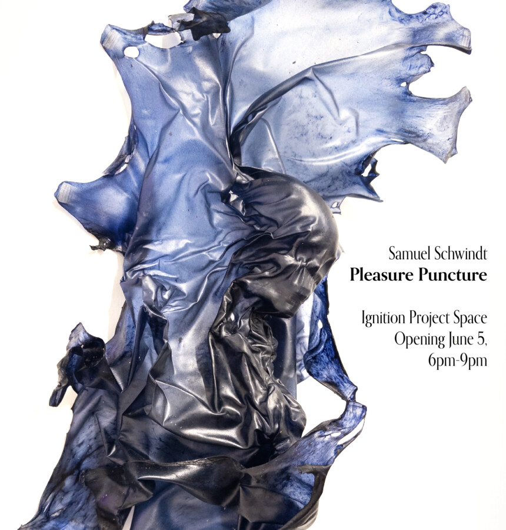

Samuel Schwindt: Pleasure Puncture
Even though phantom muscle and bone pains can rattle and scar, here they comfort. This solo exhibition is a broken leg that didn’t heal properly; it’s a glimmer from a childhood crash that—instead of a wince—is a Cheshire smile.
In Samuel Schwindt’s second solo exhibition—”Pleasure Puncture” at Ignition Project Space— hedonism in material marries desire in culture. His sources are the dirt coating his nostrils after a music fest; sweat stained from the gym; his past pained motocross competitions; his strained hands from stitching leather; his euphoria at queer spaces of the night.
Please join us for an opening reception June 5, 6 – 9 pm at 3839 W. Grand Ave, Chicago, IL 60651